Redis底层数据结构
Redis 底层数据结构
总览
SDS（动态扩容且常量获取长度的字符串）
IntSet（有序整数Set，兼备压缩空间（统一编码）和动态扩容）
Dict （双哈希表组成的字典，动态扩容收缩，渐进式rehash）
ZipList（连续内存的链表，节省了指针压缩内存但是存在连锁更新隐患）
QuickList（以ZipList节点的双端链表）
SkipList（跳表）
SDS（动态扩容且常量获取长度的字符串）
redis中Key是字符串，value往往是字符串或者字符串的集合
但是Redis没有用C语言的字符串，因为它有缺陷
读取长度需要遍历，需要读到
\0非二进制安全，如果中间有
\0会被截断不可修改，保存在常量池
SDS（simple dynamic String） ，简单动态字符串
比如 set name huge
底层会有两个SDS
本质上是一个结构体，里面成员变量
有
sdshdr8，sdshdr16，还有32，64，甚至还有5，已被弃用
1 | //buf已经保存的字符串字节数，不包含结束标识 |
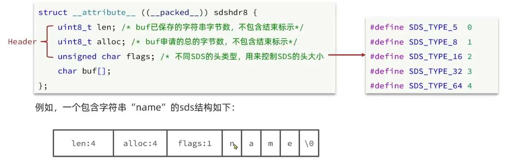
还可以动态扩容
如果小于1M，新空间为扩展后字符串的长度的两倍+1
如果新字符串大于1M，则新空间为扩展后字符串长度+1M+1
这个加一体现在后面的 \0
内存预分配：内存分配是Linux内核的事情，需要耗时，所以预分配，减少内存分配次数。
总结：
获取长度复杂度为O（1）
动态扩容
减少分配内存次数
二进制安全
IntSet（有序整数Set，兼备压缩空间和动态扩容）
IntSet 对比链表，数组的优势？
对比链表，指针乱飞，占用内存，造成碎片，IntSet连续空间；
对比数组，固定死长度，没办法动态扩容。
IntSet是 Redis 中 set 集合的一种实现方式，基于整数数组实现
长度可变
唯一
有序
1 | typedef struct intset{ |
固定编码格式，到时候寻址方便
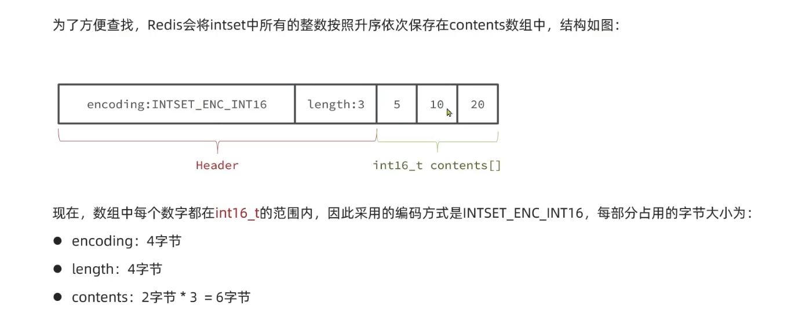
IntSet 升级
如果超过了已经编码的格式，那么会升级，增加编码大小
升级流程：
扩容数组
倒序拷贝到正确位置
新增元素到末尾
改变
encoding
新增
判断是否需要升级，需要就升级并插入
获取编码，改变编码
重置数组大小
倒序插入（需要根据大小判断角标）
插入新元素
如果没有超出
二分查找看是否重复
扩容
移动数组并插入元素
Dict （双哈希表组成的字典，动态扩容收缩，渐进式rehash）
三部分组成：
哈希表（DictHashTable）
哈希节点（DictEntry）
字典（Dict）
前面两部分如下：
一个简单的哈希表，存了多个节点
处理哈希冲突使用链表，链表使用头插法避免遍历插入
1 | //哈希表 |
最后的dict
1 | typedef struct dict{ |
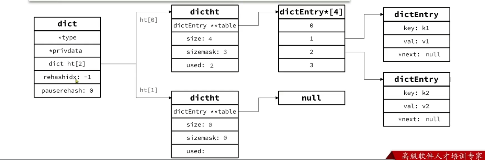
Dict 的扩容
链表导致元素较多的时候，必然导致哈希冲突增长，链表过长，查询效率变低
Dict 每次新增检查负载因子（LoadFactor=used/size），满足则会触发哈希表扩容：
如果大于1，并且服务器没有执行
BGSAVE和BGREWRITEAOF等后台进程（这些后台进程需要CPU使用，IO使用）；如果大于5；
扩容的大小为大于等于used+1的2^n
Dict 的收缩
每次删除都会检查负载因子和负载（至少要大于初始的4才收缩），小于0.1就做哈希表收缩
扩容的大小为大于等于 used 的2^n
Rehash
无论扩容还是收缩，因为size和sizemask变了，都需要rehash
渐进式hash
计算新的size
申请空间，创建dictht，赋值给
ht[1]设置
rehashidx=0代表正在rehash每次执行新增，查询，删除，修改操作，都检查一下
rehashidx是否大于-1，如果是的话那么就将ht[0].table[rehashidx]的entry链表rehash到dict.ht[1]当中，然后rehashidx++。直至所有都完成。这里的删改查两边找，新增就放到
ht[1]，导致ht[0]至少不加，最终为空将
ht[1]赋值给ht[0]给
ht[1]赋值给空哈希表，释放内存
ZipList（连续内存的链表）
Dict 因为使用了大量的指针，速度快了，但是内存浪费（指针占内存，内存也不连续有碎片）
ZipList 是一种特殊的 “双端链表”，由一系列特殊编码的连续内存块组成，可以在任意一端进行压入/弹出操作，并且操作复杂度为 O（1）
这里的 entry
的内存是不固定的，为了节省内存
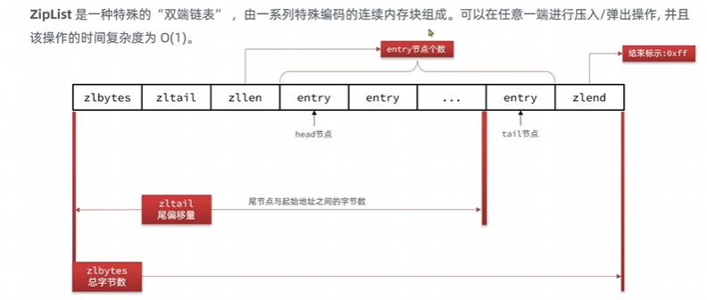
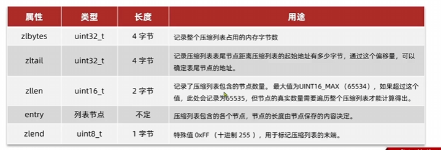
ZipListEntry
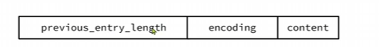
分为三部分：
previous_entry_length前一个节点的长度，占一个或者5个字节。如果前一个内存小于 254 字节，则采用1个字节来保存
如果大于254字节，则采用5个字节保存，并且第一个字节为
0xfe，后面四个才是真实的长度
encoding编码属性，记录content的数据类型（字符串或者整数）以及长度。占用1个，2个或者5个contents负责记录节点数据
这里节点的大小会影响 previous_entry_length 和
encoding 的大小
ZipList 存储长度使用小端字节序
Encoding 编码
字符串使用 00 或者 01 或者
10 开头
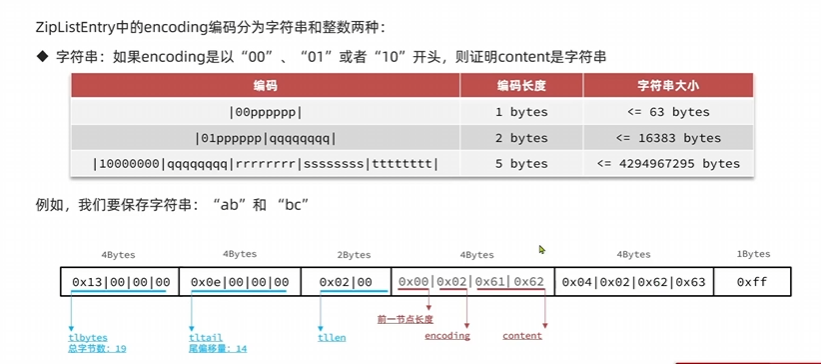
整数使用 11 开头的 encoding
，并且因为整数的长度通常比较固定，只有几种，只需要一个字节编码识别即可，无需记录长度。还能压缩到极致，把
content 都节省了（0-12）
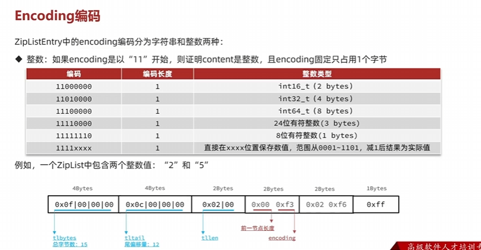
ZipList 的优点是节省内存，压缩到极致。
但是遍历慢，毕竟（近似）链表，需要从前往后根据长度推算到某个节点。
连锁更新问题
首先 entry 里面每个都含有前一个节点的长度
previous_entry_entry
，并且它的大小会根据前一个节点的大小受到影响。
如果一连串 ZipListEntry 都在 254
节点（边缘试探），那么它们被记录长度的这一项还只是一个字节，但是这时候插入一个大节点在前面，将会导致连锁更新。
其中会涉及很多内存扩容，申请空间，迁移。
这个问题还没有解决，因为概率低。
新的数据结构（紧凑列表）
QuickList（以ZipList节点的双端链表）
ZipList 压缩列表，连续内存。
但是连续内存不能太大，往往不能加入过多数据。如果空间过大，内存占用多，申请效率低。
为了解决这个问题，分片思想：多个 ZipList
为了统一管理，引入 QuickList ，即创建双端链表，特殊的是节点却是一个 ZipList
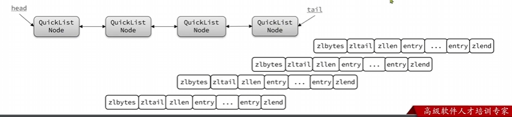
压缩内存配置
配置配置文件 或者 使用 config 命令
限制 QuckList 每个 ZipList 的 entry 过多
list-max-ziplist-size正数代表 ZipList 允许的entry个数最大值，如果是负数则代表最大内存大小。默认是-2list-compress-depth压缩 ZipList ，这个数量代表 QuickList 首尾不压缩的数量。因为一般我们访问更多首尾节点
代码及结构
quicklist的定义
1 | typedef struct quicklist{ |
quicklistNode 的定义（主体放一个ziplist）
1 | typedef struct qucklistNode{ |
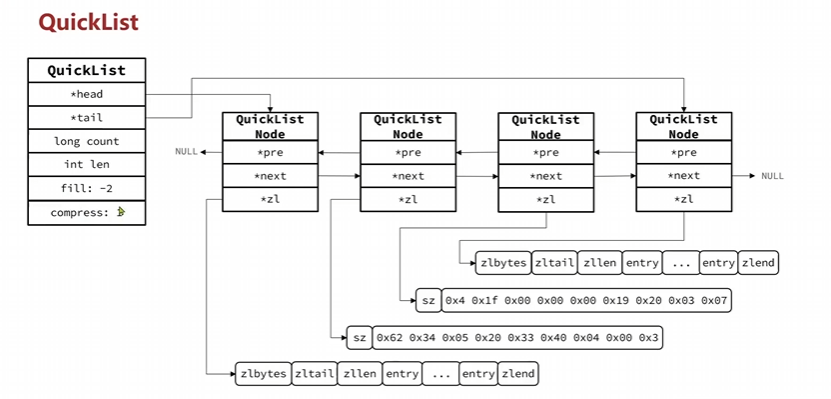
SkipList（跳表）
ziplist 和 quicklist 都有随机访问需要遍历的缺点
SkipList （跳表）首先是双向链表，但是与传统链表有区别：
升序排列存储
节点可能包含多个指针，指针跨度不同
优点：
查询性能和红黑树接近，可以范围查询。实现简单
最多允许 32 级指针，随机层数。
层级是1到32的随机数
1 | //整个跳表 |
1 | typedef struct zskiplistNode{ |
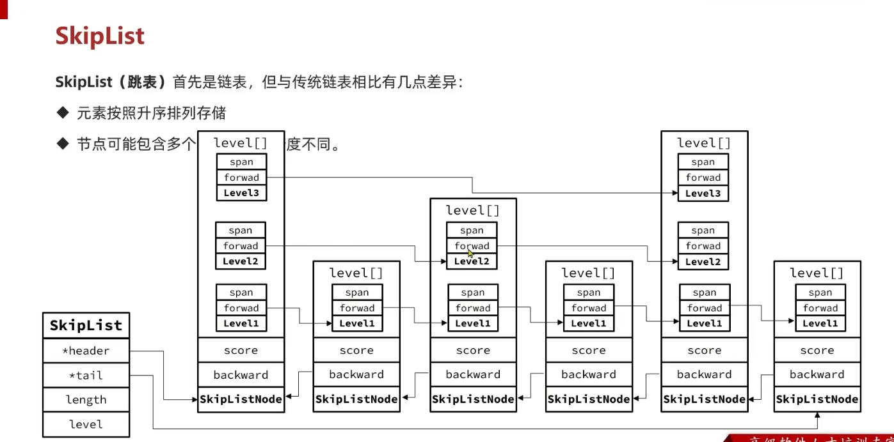